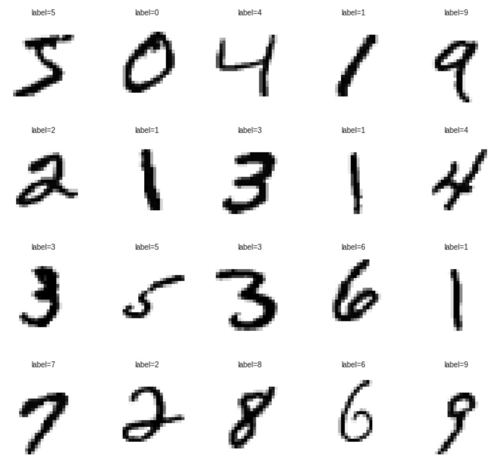

以往要訓練機器學習手寫辨識模型通常都會使用Tensorflow、Keras......等機器學習相關的函式庫來達成， 而初學者如照著範例做通常只會得到模型的準確度與損失率，如要手寫驗證自己調整參數學習出模型則需另尋他法，而本網站透過網頁的方式 並搭配時下熱門的JavaScript函式庫Tensorflow.js，來實現免安裝、免撰寫即可透過瀏覽器訓練手寫辨識模型和手寫驗證模型的功能。
MNIST手寫辨識模型訓練設定主要有三個功能
Value顯示:
目前手寫辨識模型狀態，當訓練完模型或上傳完模型時會顯示目前使用模型的名稱。
Upload Model功能:
上傳以訓練的模型與權重，使用Tensorflow.js讀取API，因此進階使用者可以用自訂模型與權重， 一般使用者請使用Train Model功能下載的模型。
Train Model功能:
按下後會彈出訓練參數設定，目前可供設定的有:
TrainBach(訓練週期次數)、TrainBach(每周期內送入的資料大小)、Conv_1 Activaion(第一層卷積層激勵函式)、Conv_2 Activaion(第二層卷積層激勵函式)
如不知道如何調整請使用預設值即可，最少會有90%以上的準確度，表格左下ModelName可以設定模型名稱，設定完成後按下表格右下的Training即可開始進行手寫辨識模型訓練。
訓練時會在下表顯示Batch(目前訓練周期)、Val_acc(目前模型使用驗證資料驗證準確率)、Val_loss(目前模型使用驗證資料驗證損失率)，表格每10周期更新一次。
Dowload Model功能:
當訓練模型完成後會顯示此按鈕下載訓練完成的模型，因為會下載模型檔與權重檔，因此瀏覽會詢問是否要允許多檔案下載。
Delet Model功能:
使用者可以選擇按下F5(重新整理目前頁面)或按下此按鈕來刪除目前使用的模型。
測試模型辨識
模型載入完成後可以使用此功能進行模型的驗證，可以在畫布上用滑鼠進行手寫功能，右側可以調整書寫的顏色以及畫筆的大小， 書寫完後按下辨識即可以讓類神經網路進行數字的辨識。
因MNIST資料集是經過濾並帶有灰階深淺的資料，在網頁上手寫時並不帶有灰階深淺色彩只有單色，因此在辨識上如(7,9)、(8,3)特徵較相近的數字會造成神經網路的誤判， 建議可以書寫特徵較明顯的筆劃來增加辨識成功機會或開啟模擬灰階功能。
訓練模型選單所內建的類神經網路模型依序為:
卷積層1(input:[28,28,1])->池化層1->卷積層2->池化層2->平坦層->全連接輸出層(Output:10,Activation Function:softmax)
關於自製模型請參考Tensorflow.js說明頁面
測試模型繪畫版所需輸出的格式為[1,28,28,1]，因此自製的模型的輸入必須為此格式。
請確認目前所使用的瀏覽器是否支援JavaScript ES6 和 WebGL，推薦使用Google Chrome並開啟硬體加速功能。
MNIST(Modified National Institute of Standards and Technology database)是一個由NIST資料集重新混和手寫數字資料集， 內涵數字0~9共5.5萬筆訓練資料與1萬筆驗證資料，每筆資料集大小為28x28。
如下圖為MNIST手寫資料集中前10筆資料內容
機器學習為人工智慧的一個分支,而本網頁使用機器學習演算法中的類神經網路來訓練電腦了解手寫數字0~9。
卷積神經網路為類神經網路中的一種演算法，其結構主要有卷積層、池化層、線性整流層。